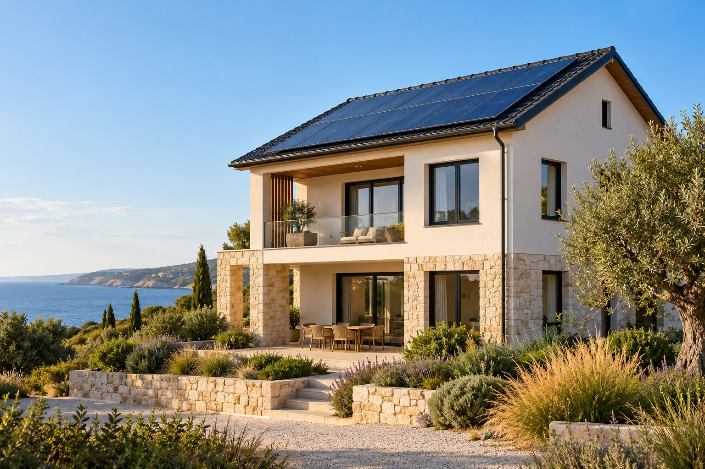

Ясна комплектация
Модели, мощности, съвместимост, гаранционни условия и резервно захранване, ако е проектирано.
Предварителната сметка е начало. Реалният проект изисква обследване, съгласуване и индивидуална оферта. Тук показваме планирания процес на услугата.

Град, потребление, площ, бюджет и интерес към батерия. Без необходимост от лични данни в калкулатора.
Примерна конфигурация и видими допускания. Не е технически проект или обещание за икономия.
Планиран е разговор за целите, режима на потребление и ограниченията. В този прототип заявката не се изпраща.
Проверка на покрива, електрическата инсталация, необходимите процедури и условията за присъединяване.
Планиран е монтаж от квалифицирани специалисти, изпитване и предаване на документация. Това не е действаща услуга в прототипа.
Модели, мощности, съвместимост, гаранционни условия и резервно захранване, ако е проектирано.
Оборудване, монтаж, проект, процедури и допълнителни работи — всяка позиция поотделно.
Описани допускания, очаквани загуби и рискове. Без гарантирана възвръщаемост от предварителен модел.